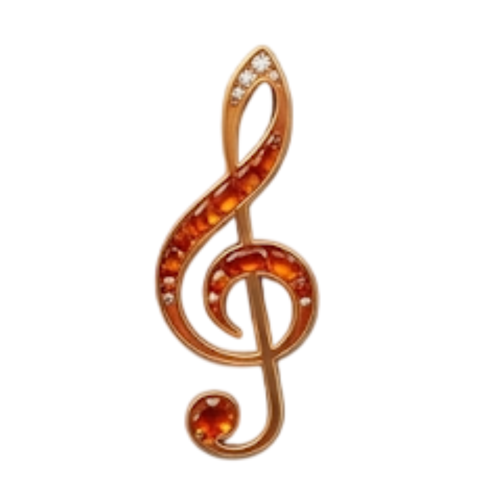
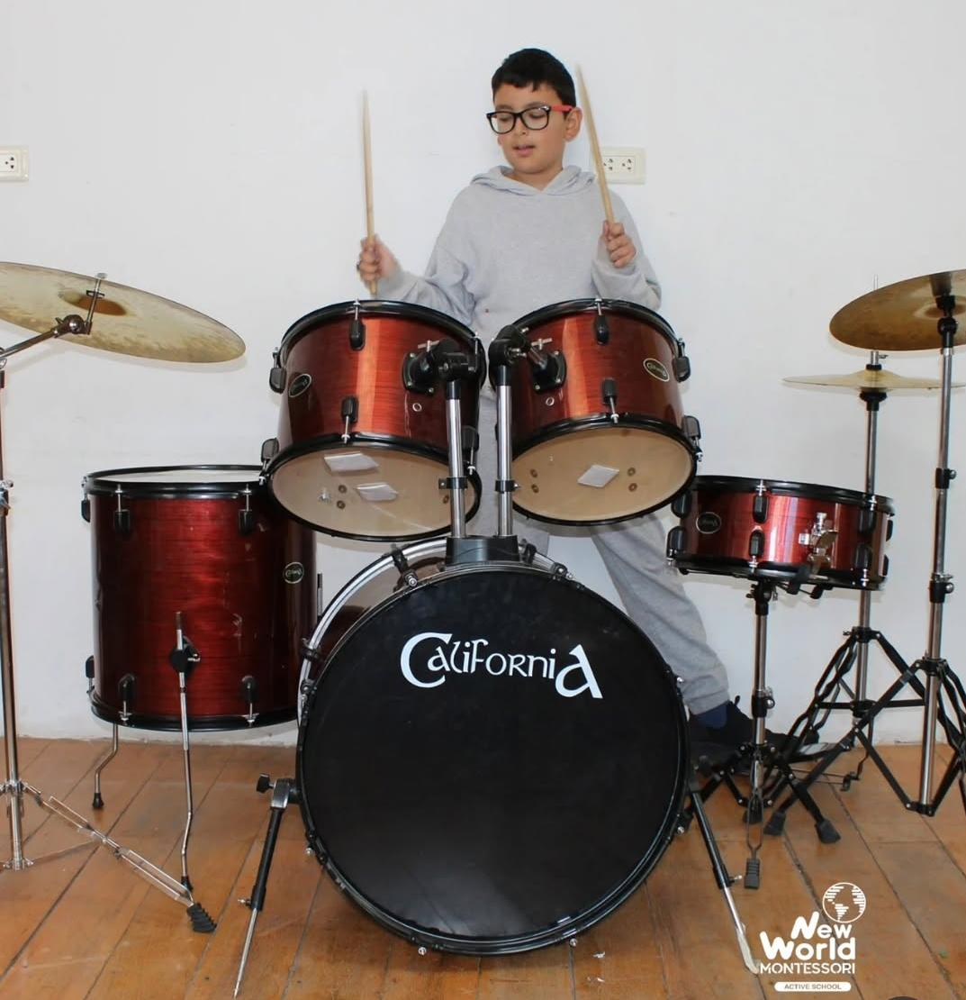
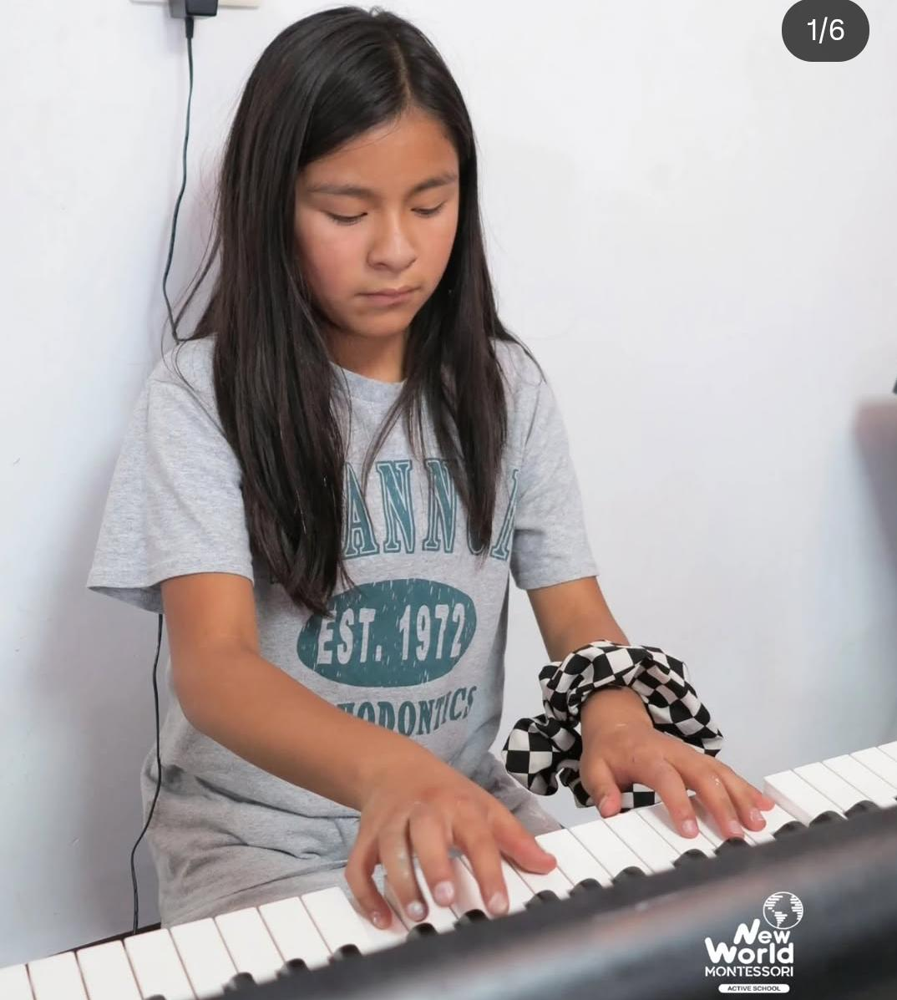
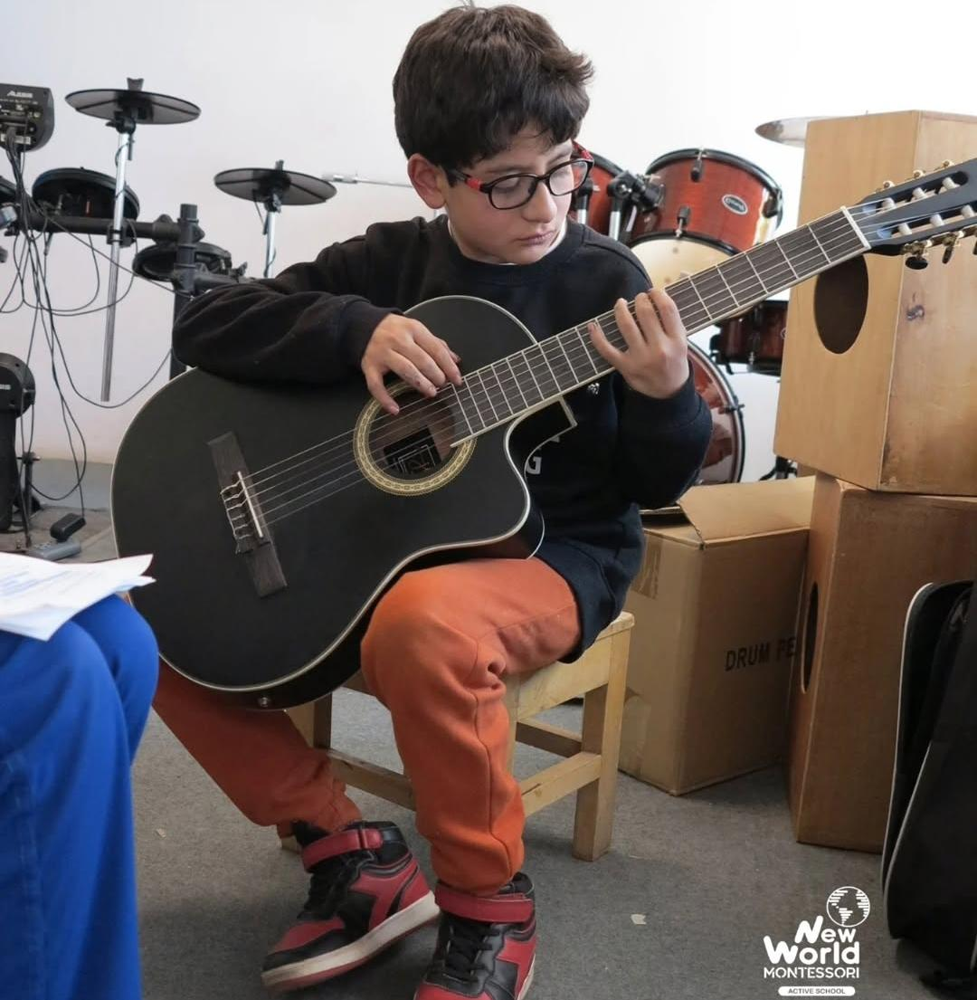
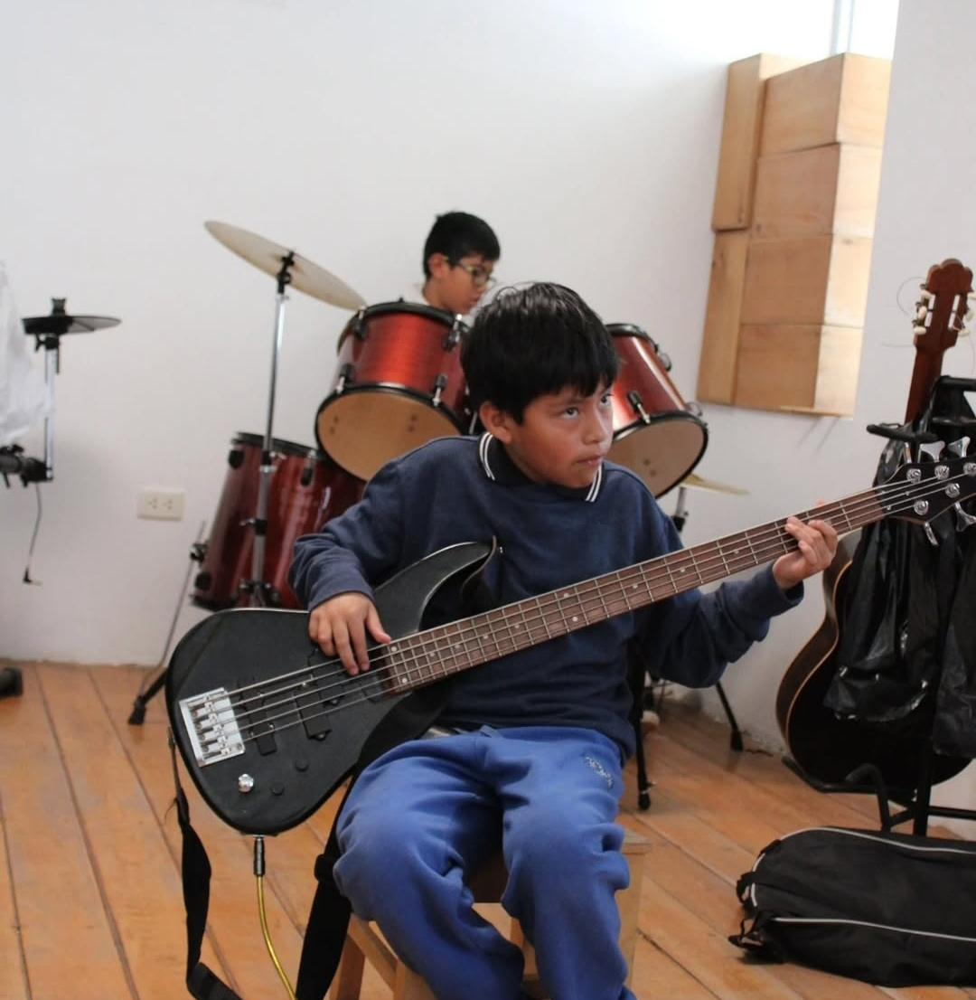
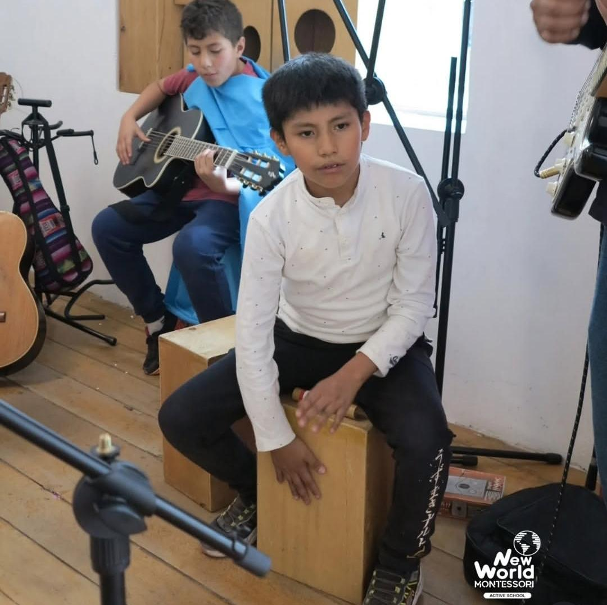

TALLER 1A
Exploramos el pulso, el ritmo y la coordinación musical con instrumentos base como cajón peruano, flauta y percusión corporal, fortaleciendo la escucha activa desde el inicio.

Instrumentos, afinación, lectura musical y práctica interpretativa.
Exploramos el pulso, el ritmo y la coordinación musical con instrumentos base como cajón peruano, flauta y percusión corporal, fortaleciendo la escucha activa desde el inicio.
Introducimos la lectura de partituras, notas, silencios y figuras rítmicas para que los estudiantes comprendan cómo se organiza una pieza musical antes de interpretarla.
Se trabaja la técnica inicial en piano, guitarra acústica, guitarra eléctrica y flauta, conectando postura, digitación, acordes básicos y melodías sencillas.
Los estudiantes aprenden a afinar instrumentos, reconocer alturas sonoras y preparar ensambles donde cada participante cumple un rol musical claro.
Integramos piano, violín, guitarras, flauta y cajón peruano en montajes musicales completos, aplicando lectura de partituras, afinación y expresión escénica.




